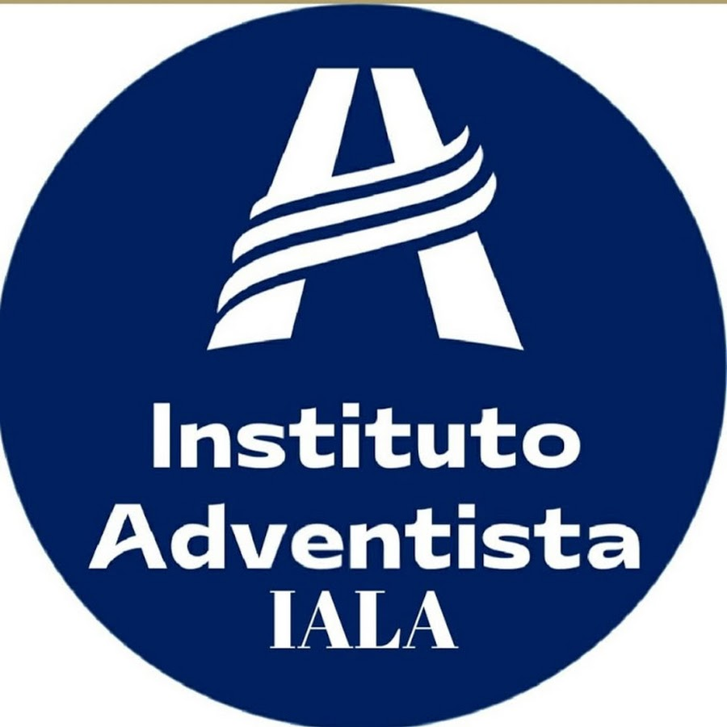

CONTACTO
+591 77752613

eledavid88@gmail.com

Calle Santivañez,1001,La Paz,Bolivia


HABILIDADES
- Comunicación oral y escrita
- Responsabilidad
- Aprendizaje rápido
- Proactividad
- Flexibilidad
IDIOMAS
Inglés - Nivel intermedio básico
+591 77752613
eledavid88@gmail.com
Calle Santivañez,1001,La Paz,Bolivia
Inglés - Nivel intermedio básico
Estudiante del grado de bachiller, con el objetivo de ingresar a la carrera de informatica que se encuentra en la Facultad de Ciencias Puras y Naturales de la Universidad Mayor de San Andrés. La mayor parte del tiempo me la paso intentado ser mejor en lo que me interesa, en hacer las cosas lo mejor que pueda, siempre cumplo con lo que tengo que hacer.

Tengo conocimientos básicos sobre informatica como ser:
Grado: bachiller
Lugar: Unidad Educativa Adventista Los Andes

Año de promoción: 2020